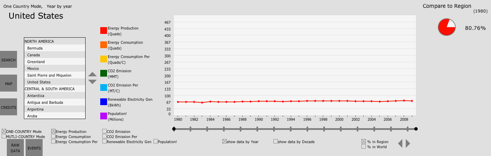

Welcome to the homepage of my first project in Fall 2012 Semester, Electric Avenue, project 1 of Professor Andy Johnson's Visualization course.
Course website is at http://www.evl.uic.edu/aej/424/index.html

Fig.1 Overview of the interface
As the first application using Processing, the purpose of the project are:
- learn how to get data into Processing
- learn how to write an interactive Processing application
- learn how to create an effective user interface for viewing and analyzing data
- learn how to make this work compatable with classroom touch-wall
Introduction
The basic idea of this project is to grab several data sets related to energy of the world (inclulding total primary energy production, total primary energy consumption, total carbon dioxide emissions from the consumption of Energy and total renewable electricity generation) and provide several important and interesting manupilation means such as choosing a country or a region, comparing countries, comparing data sets, relating local data to global data, choosing a range of years to view, checking raw data as a table, cluster the data by decade, etc.
Mission Accomplished
| Requirements | Completion |
|---|---|
| be able to view any of the data sets | Y |
| choose which data set through a convenient interface to view for the entire time range | Y |
| see the data in graphical and tabular form | Y |
| see data as totals, per-capita, and percentages | Y |
| be able to pick a country or region and see the data for that country or region and how it relates to the total | Y |
| select countries or regions by typing their name with intelligent help (filtering, auto-complete) | Y |
| help screen and author credits screen | Y |
| compare two or more countries or regions for the same data set | Y |
| compare two or more data sets for the same country or region | Y |
| cluster the data by decade | Y |
| choose a range of years to view | Y |
| select regions from a map | Y |
| create an onscreen keyboard for text entry | Y |
| deal intelligently with countries that form or break up | Y |
| integrate population data since 1980 | Y |
| integrate international events that may affect this data to look for correlations | Y |
| discuss five interesting findings or evidence to support conclusions using the interface | Y |